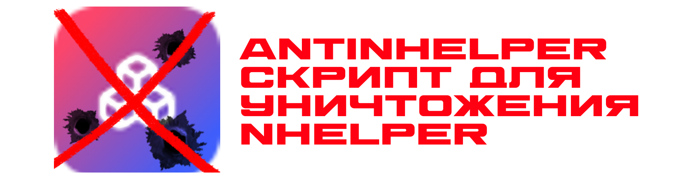

| № | Название уязвимости | Причина | 0 | Закрытый исходный код | Разработчик боится своего говнокода | 1 | Имя процесса в каталоге %Temp%\.net | Использование .NET Fraemwork | 2 | Утечка памяти при обновлении интерфейса | говнокод и чрезмерное использование нейросетей | 3 | Долгая прогрузка интерфейса на слабых ПК | Использование тяжёлого графического интерфейса |
|---|